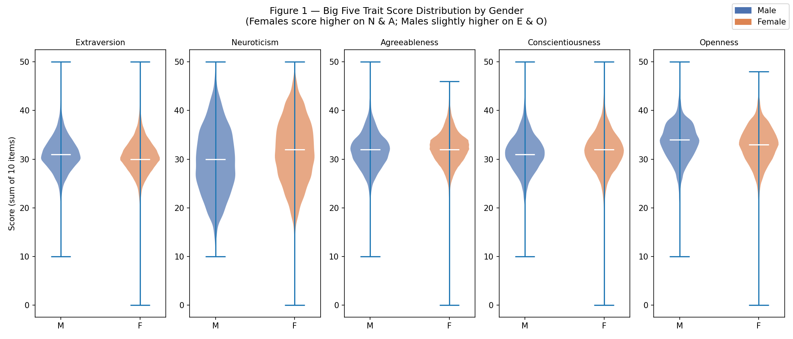
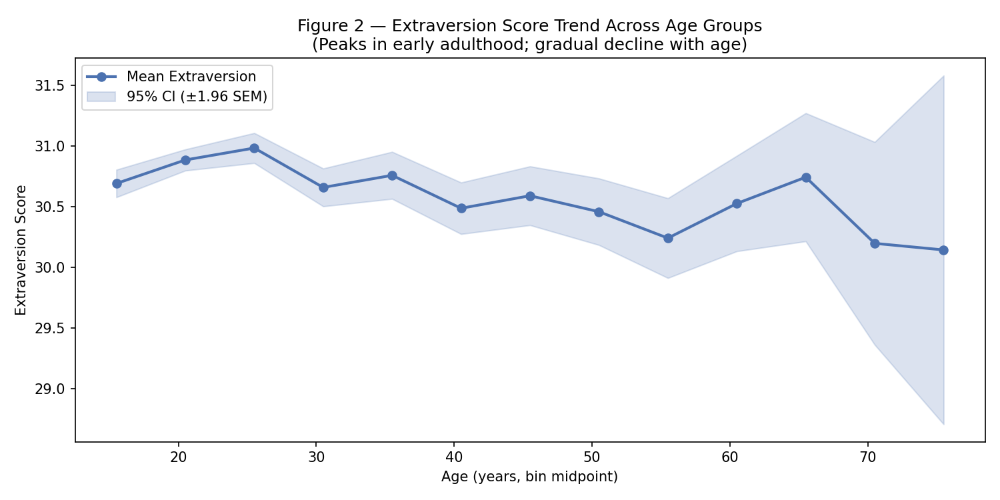

Goal ／ 研究目標
本專案以 Open Psychometrics 公開的大型 Big Five 人格問卷資料（n = 19,719）為基礎，探索兩個問題： （1）五個人格特質（OCEAN）的分數分布在男性與女性之間是否存在可觀察的差異？ （2）外向性（Extraversion）分數是否隨年齡呈現有意義的趨勢？
Procedure ／ 分析過程
- 資料來源：從 Open Psychometrics 下載 BIG5.zip，解壓後得到 tab 分隔的問卷原始資料，包含 50 道 Likert 量表題（E1–E10、N1–N10、A1–A10、C1–C10、O1–O10）以及人口學變項。
- 資料清理：排除年齡不合理的受試者（保留 13–80 歲），並移除性別填寫為「未說明（0）」的列，最終保留 19,608 筆（流失 0.6%）。
- 特質分數計算：將各特質的 10 道題目加總，得到每位受試者的 E、N、A、C、O 分數（各 10–50 分）。
- 描述性分析：以小提琴圖（violin plot）比較男女在五個特質分數上的分布形狀與中位數差異。
- 關係分析：以每五歲為一個年齡區間（age bin），計算各區間的外向性平均值與 95% 信賴區間，繪製趨勢折線圖。
- 防禦性設計：程式碼採 Style C（Plan-first）方式撰寫，執行前先確認欄位數、欄位型別及遺漏值，確保在不同環境下可重現。
Outcome ／ 結果


Caveats ／ 研究侷限
- 取樣偏誤：資料來自主動上網填寫問卷的使用者，在年齡、教育程度、網路使用習慣上存在系統性偏差，不能代表一般大眾。
- 自陳量表的限制：Big Five 為自填問卷，受社會期許（social desirability bias）影響，受試者可能高報或低報特定特質。
- 橫斷面設計：年齡趨勢圖是橫斷面資料，不同年齡組反映的是不同世代（cohort），無法直接推論個體隨時間的變化。
- 分數未做反向計分：本分析直接加總原始分數，未對反向題進行校正，可能略微影響各特質分數的準確性。
GitHub Repository
完整程式碼、notebooks 與資料下載說明請見：
github.com/Jie-Yi-Lu/big5-mini-explorerAuthor
呂杰驛（Jie-Yi Lu），學號 113825002
國立中央大學 認知神經科學研究所 碩二生
National Central University, Graduate Institute of Cognitive Neuroscience
Last updated: 2026-05-06